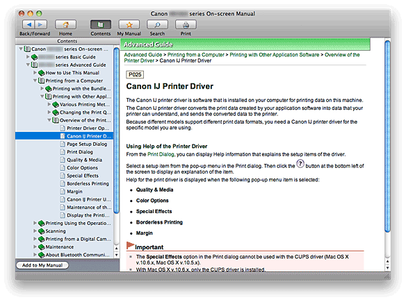
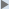

When you click a document title displayed in the contents pane found to the left of the on-screen manual, the documents of that title are displayed in the explanation window on the right side.
When you click  found to the left of , the document titles found in the lower hierarchies are displayed.
 Note
Note-
Click
 Contents to close or display the contents pane.
Contents to close or display the contents pane.